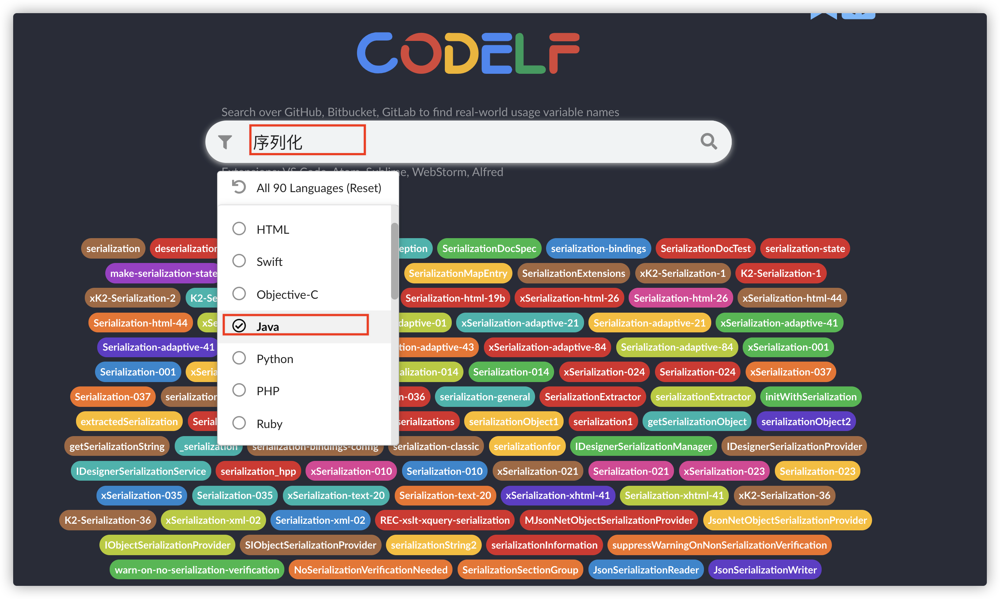
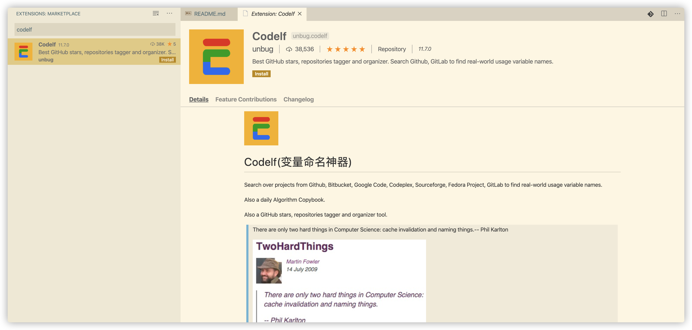

> 可选标题：工作半年，变量命名不规范，被diss了！
项目组新来的实习生因为变量命名被 “diss” 了！
大家好，这里是热爱分享的 Guide ！
我还记得我刚工作那一段时间， 项目 Code Review 的时候，我经常因为变量命名不规范而被 “diss”!
究其原因还是自己那会经验不足，而且，大学那会写项目的时候不太注意这些问题，想着只要把功能实现出来就行了。
但是，工作中就不一样，为了代码的可读性、可维护性，项目组对于代码质量的要求还是很高的！
前段时间，项目组新来的一个实习生也经常在 Code Review 因为变量命名不规范而被 “diss”，这让我想到自己刚到公司写代码那会的日子。
于是，我就简单写了这篇关于变量命名规范的文章，希望能对同样有此困扰的小伙伴提供一些帮助。
确实，编程过程中，有太多太多让我们头疼的事情了，比如命名、维护其他人的代码、写测试、与其他人沟通交流等等。
据说之前在 Quora 网站，由接近 5000 名程序员票选出来的最难的事情就是“命名”。
大名鼎鼎的《重构》的作者老马（Martin Fowler）曾经在TwoHardThings这篇文章中提到过CS 领域有两大最难的事情：一是 缓存失效 ，一是 程序命名 。

这个句话实际上也是老马引用别人的，类似的表达还有很多。比如分布式系统领域有两大最难的事情：一是 保证消息顺序 ，一是 严格一次传递 。

今天咱们就单独拎出 “命名” 来聊聊！
这篇文章配合我之前发的 《编码 5 分钟，命名 2 小时？史上最全的 Java 命名规范参考！》 这篇文章阅读效果更佳哦！
为什么需要重视命名？
咱们需要先搞懂为什么要重视编程中的命名这一行为，它对于我们的编码工作有着什么意义。
为什么命名很重要呢？ 这是因为 好的命名即是注释，别人一看到你的命名就知道你的变量、方法或者类是做什么的！
简单来说就是 别人根据你的命名就能知道你的代码要表达的意思 （不过，前提这个人也要有基本的英语知识，对于一些编程中常见的单词比较熟悉）。
简单举个例子说明一下命名的重要性。
《Clean Code》这本书明确指出：
好的代码本身就是注释，我们要尽量规范和美化自己的代码来减少不必要的注释。
若编程语言足够有表达力，就不需要注释，尽量通过代码来阐述。
举个例子：
去掉下面复杂的注释，只需要创建一个与注释所言同一事物的函数即可
// check to see if the employee is eligible for full benefits if ((employee.flags & HOURLY_FLAG) && (employee.age > 65))应替换为
if (employee.isEligibleForFullBenefits())
常见命名规则以及适用场景
这里只介绍 3 种最常见的命名规范。
驼峰命名法（CamelCase）
驼峰命名法应该我们最常见的一个，这种命名方式使用大小写混合的格式来区别各个单词，并且单词之间不使用空格隔开或者连接字符连接的命名方式
大驼峰命名法（UpperCamelCase）
类名需要使用大驼峰命名法（UpperCamelCase）
正例：
ServiceDiscovery、ServiceInstance、LruCacheFactory
反例：
serviceDiscovery、Serviceinstance、LRUCacheFactory
小驼峰命名法（lowerCamelCase）
方法名、参数名、成员变量、局部变量需要使用小驼峰命名法（lowerCamelCase）。
正例：
getUserInfo()
createCustomThreadPool()
setNameFormat(String nameFormat)
Uservice userService;
反例：
GetUserInfo()、CreateCustomThreadPool()、setNameFormat(String NameFormat)
Uservice user_service
蛇形命名法（snake_case）
测试方法名、常量、枚举名称需要使用蛇形命名法（snake_case）
在蛇形命名法中，各个单词之间通过下划线“_”连接，比如should_get_200_status_code_when_request_is_valid、CLIENT_CONNECT_SERVER_FAILURE。
蛇形命名法的优势是命名所需要的单词比较多的时候，比如我把上面的命名通过小驼峰命名法给大家看一下：“shouldGet200StatusCodeWhenRequestIsValid”。
感觉如何？ 相比于使用蛇形命名法（snake_case）来说是不是不那么易读？
正例：
@Test
void should_get_200_status_code_when_request_is_valid() {
......
}
反例：
@Test
void shouldGet200StatusCodeWhenRequestIsValid() {
......
}
串式命名法（kebab-case）
在串式命名法中，各个单词之间通过连接符“-”连接，比如dubbo-registry。
建议项目文件夹名称使用串式命名法（kebab-case），比如 dubbo 项目的各个模块的命名是下面这样的。

常见命名规范
Java 语言基本命名规范
1、类名需要使用大驼峰命名法（UpperCamelCase）风格。方法名、参数名、成员变量、局部变量需要使用小驼峰命名法（lowerCamelCase）。
2、测试方法名、常量、枚举名称需要使用蛇形命名法（snake_case），比如should_get_200_status_code_when_request_is_valid、CLIENT_CONNECT_SERVER_FAILURE。并且，测试方法名称要求全部小写，常量以及枚举名称需要全部大写。
3、项目文件夹名称使用串式命名法（kebab-case），比如dubbo-registry。
4、包名统一使用小写，尽量使用单个名词作为包名，各个单词通过 "." 分隔符连接，并且各个单词必须为单数。
正例： org.apache.dubbo.common.threadlocal
反例： org.apache_dubbo.Common.threadLocals
5、抽象类命名使用 Abstract 开头。
//为远程传输部分抽象出来的一个抽象类（出处：Dubbo源码）
public abstract class AbstractClient extends AbstractEndpoint implements Client {
}
6、异常类命名使用 Exception 结尾。
//自定义的 NoSuchMethodException（出处：Dubbo源码）
public class NoSuchMethodException extends RuntimeException {
private static final long serialVersionUID = -2725364246023268766L;
public NoSuchMethodException() {
super();
}
public NoSuchMethodException(String msg) {
super(msg);
}
}
7、测试类命名以它要测试的类的名称开始，以 Test 结尾。
//为 AnnotationUtils 类写的测试类（出处：Dubbo源码）
public class AnnotationUtilsTest {
......
}
POJO 类中布尔类型的变量，都不要加 is 前缀，否则部分框架解析会引起序列化错误。
如果模块、接口、类、方法使用了设计模式，在命名时需体现出具体模式。
命名易读性规范
1、为了能让命名更加易懂和易读，尽量不要缩写/简写单词，除非这些单词已经被公认可以被这样缩写/简写。比如 CustomThreadFactory 不可以被写成 ~~CustomTF 。
2、命名不像函数一样要尽量追求短，可读性强的名字优先于简短的名字，虽然可读性强的名字会比较长一点。 这个对应我们上面说的第 1 点。
3、避免无意义的命名，你起的每一个名字都要能表明意思。
正例：UserService userService; int userCount;
反例: UserService serviceint count
4、避免命名过长（50 个字符以内最好），过长的命名难以阅读并且丑陋。
5、不要使用拼音，更不要使用中文。 不过像 alibaba 、wuhan、taobao 这种国际通用名词可以当做英文来看待。
正例：discount
反例：dazhe
Codelf:变量命名神器?
这是一个由国人开发的网站，网上有很多人称其为变量命名神器， 我在实际使用了几天之后感觉没那么好用。小伙伴们可以自行体验一下，然后再给出自己的判断。
Codelf 提供了在线网站版本，网址：https://unbug.github.io/codelf/，具体使用情况如下：
我选择了 Java 编程语言，然后搜索了“序列化”这个关键词，然后它就返回了很多关于序列化的命名。

并且，Codelf 还提供了 VS code 插件，看这个评价，看来大家还是很喜欢这款命名工具的。

相关阅读推荐
- 《阿里巴巴 Java 开发手册》
- 《Clean Code》
- Google Java 代码指南：https://google.github.io/styleguide/javaguide.html#s5.1-identifier-name
- 告别编码5分钟，命名2小时！史上最全的Java命名规范参考：https://www.cnblogs.com/liqiangchn/p/12000361.html
总结
作为一个合格的程序员，小伙伴们应该都知道代码表义的重要性。想要写出高质量代码，好的命名就是第一步！
好的命名对于其他人（包括你自己）理解你的代码有着很大的帮助！你的代码越容易被理解，可维护性就越强，侧面也就说明你的代码设计的也就越好！
在日常编码过程中，我们需要谨记常见命名规范比如类名需要使用大驼峰命名法、不要使用拼音，更不要使用中文......。
另外，国人开发的一个叫做 Codelf 的网站被很多人称为“变量命名神器”，当你为命名而头疼的时候，你可以去参考一下上面提供的一些命名示例。
最后，祝愿大家都不用再为命名而困扰!